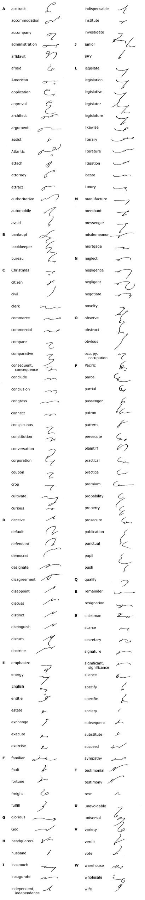
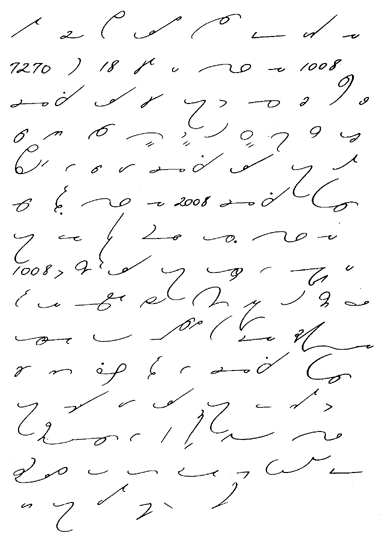

Unit 36
A Short Vocabulary
246.
This short vocabulary will be a valuable addition to the equipment
of every shorthand writer. Though many of these words are
not of high frequency, it will be seen at a glance that they are
of sufficient importance to warrant study. Many of them
are written according to the abbreviating principle:

247.
Reading and Dictation Practice

248.
Writing Practice
1. Of the 61 aircraft-production
establishments reporting to the U.S. Department of Commerce in
1917, 45 were located in New York; 9 each in California and Michigan;
4 each in Illinois, Missouri, and Ohio; 3 each in New Jersey and
Pennsylvania; 2 in Maryland and 1 each in Colorado, Connecticut,
Iowa, Kansas, Nebraska, Virginia, Washington, and Wisconsin.
2. There were 4,134 civilian-owned aircraft,
including balloons, airplanes, and airships. California led with
more than 600; New York second with 387; Illinois, 350; Michigan,
291; Texas, 261; Ohio, 231; Missouri, 216; and Pennsylvania, 212.
3. Air mail is rapidly securing the business
that always goes to the fastest method of transportation. Illustrative
of the difference in transportation time between train and air-mail
planes is the following schedule: New York to San Francisco, train
83 hours, air mail 31 hours; Chicago to New York, train to hours,
air mail 9 hours; St. Paul to Dallas, train 37 hours, air mail
17 hours; Boston to Cleveland, train 16 hours, air mail 8 hours;
Los Angeles to St. Louis, train 60 hours, air mail 26 hours.
4. The average rise and fall of tide at the
important American seaports is as follows: Baltimore, 1 foot,
2 inches; Boston, 9 feet, 7 inches; Galveston, 1 foot; New Orleans,
none; New York, 4 feet, 5 inches; Philadelphia, 5 feet, 2 inches;
San Francisco, 3 feet, 11 inches; and Washington, D. C., 2 feet,
11 inches.
5. The English lady was obliged to abandon
her plan to celebrate Christmas on this side of the Atlantic with
her son, who was a Junior at college.
6. It is obvious that failure to observe the
terms of the mortgage constitutes a default in the agreement.
7. The well-nigh universal and wholesale use
of the automobile has added greatly to the comfort and luxury
of living.
8. The merchant notified his salesmen that
all the goods stored in the warehouse were to be put on sale.
9. Three classes of employees were affected
by the notice—secretaries, bookkeepers, and general clerks.
10. In consequence of the disagreement between
the plaintiff and his attorney, the jury heard no testimony that
day.
11. It was a distinct disappointment to the
distinguished literary light not to be included on the program.
12. The messenger made a frantic effort to
locate the parcel containing the testimonials regarding the texts.